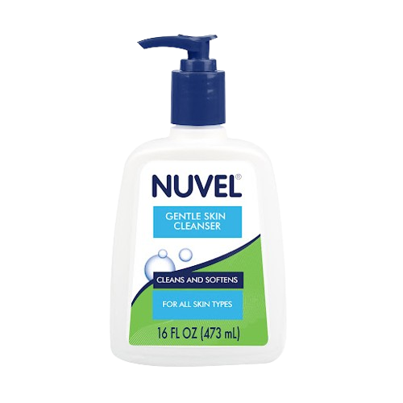
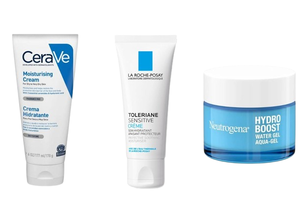
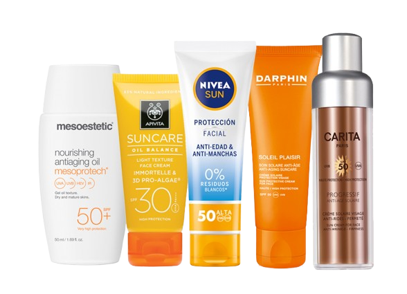

Bienvenido a MakeupTime, donde conoceras lo mejor relacionado con el maquillaje ¡Preparate para descubrir las últimas tendencias y trucos de maquillaje!
Bienvenido a MakeupTime, donde conoceras lo mejor relacionado con el maquillaje ¡Preparate para descubrir las últimas tendencias y trucos de maquillaje!
Esta es una pregunta muy frecuente entre las mujeres y, la verdad, tiene una respuesta muy subjetiva, ya que todo depende de lo que busques, de tu presupuesto e incluso de tu estilo de vida. De hecho, es muy común que un producto que para una mujer es indispensable de por vida, a otra ni siquiera le funcione.
¿Por qué sucede esto? La respuesta es simple: cada piel es un mundo totalmente distinto en el que influyen factores clave de cada una de nosotras, tales como el tipo de piel, el pH, el subtono y la sensibilidad. Sin embargo, tomando en cuenta todos estos aspectos, a lo largo de la historia de esta gran industria del maquillaje siempre han destacado ciertas marcas por su excelente calidad y su gran adaptabilidad a cada tipo de piel.
| Marcas de Baja Gama | Marcas de Alta Gama |
|---|---|
|
|
Esta es otra de las grandes preguntas en el mundo de la belleza y la respuesta corta es: Sí, es seguro maquillarse todos los días, siempre y cuando tengas una rutina estricta de cuidado de la piel.
El maquillaje actual ha evolucionado grandemente; hoy en día las fórmulas son mucho más avanzadas, ligeras e incluso incluyen ingredientes que cuidan el rostro. El maquillaje por sí solo no daña la piel; el verdadero culpable suele ser el mal uso o el descuido.
Para mantener tu piel sana si decides maquillarte a diario, debes tener un correcto skincare y por supuesto un buen desmaquillante para cuando llegues a casa.
Toda rutina de skincare comienza por lavarse la cara antes de ir a dormir, los jabones faciales adecuados para cada tipo de piel son una opción excelente para retirar la suciedad del rostro acumulada durante todo el día.

Luego de la limpieza, es fundamental hidratar, la crema actúa como una barrera protectora externa que evita que el agua de nuestra piel se evapore. Elegir la adecuada nos garantiza que el rostro se mantenga suave, elástico y protegido tanto durante el día y como en la noche.

El paso final e indispensable de cualquier rutina, es la protección solar, no importa si el día está nublado o si te quedas en casa todo el día; los rayos ultravioletas penetran las nubes y las ventanas, acelerando el envejecimiento. El protector solar es el escudo definitivo para mantener intactos los resultados de tu cuidado interior.
